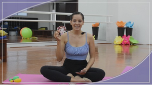

Pasos Básicos
Plie
Flexiona las rodillas manteniendo los talones en el suelo.
Tendu

Desliza el pie por el suelo, manteniendo contacto, hasta estirar la pierna.
Degagé

Despega el pie del suelo ligeramente, sin levantar el talón.